Publicado em 25 de julho de 2018 por Ana Laura Matos e Iago Carraschi
O solo é um importante recurso natural e desempenha uma função primordial na natureza: a manutenção da vida na Terra. Assim como os outros elementos, o solo precisa ser preservado. Deste modo, é importante conhecermos quais os tipos de solos existem no Brasil, do mesmo modo conhecermos o cenário geral dos mesmos dentro de cada região. Desta forma, é possível analisar em quais condições, tanto climáticas, quanto ao uso do solo na produção animal e/ou no cultivo para que assim, seja possível dar a manutenção necessária.
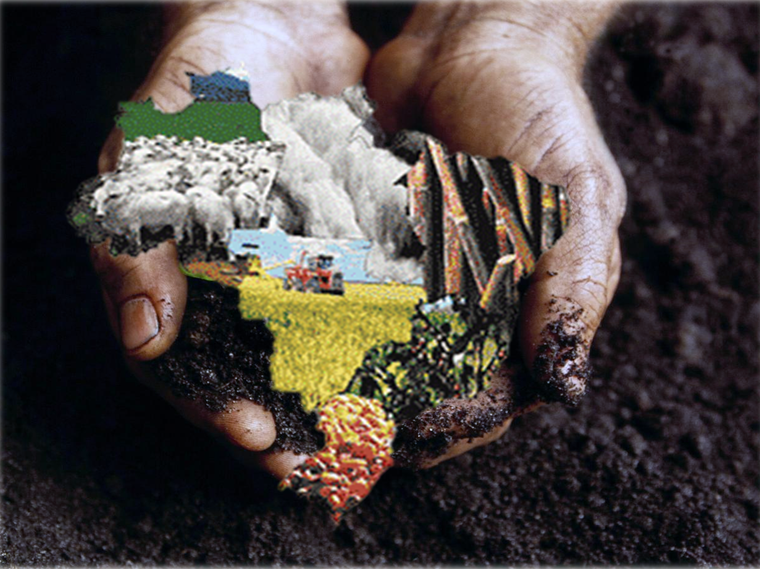
A partir disso, é vasta a diversidade de tipos de solos nas regiões brasileiras, sendo essa diversidade resultado dos processos correspondentes às formas e tipos de relevo, clima, material de origem, vegetação e organismos associados, que, por sua vez, condicionaram e condicionam ainda inúmeros processos na caracterização dos solos existentes hoje. Desse modo, pode-se distinguir 13 classes de solos das paisagens brasileiras, que serão brevemente mencionadas:
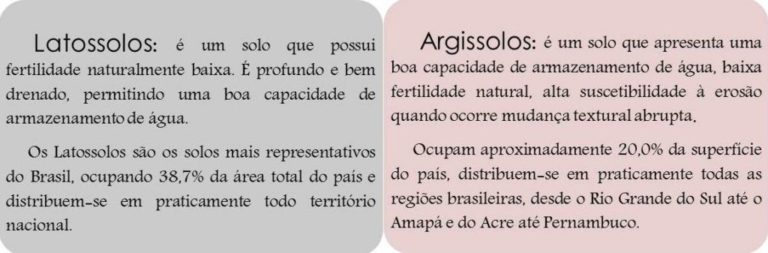
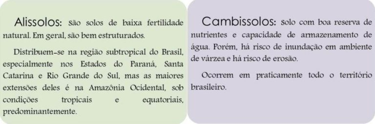
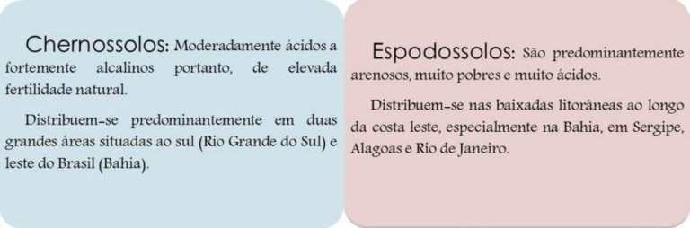
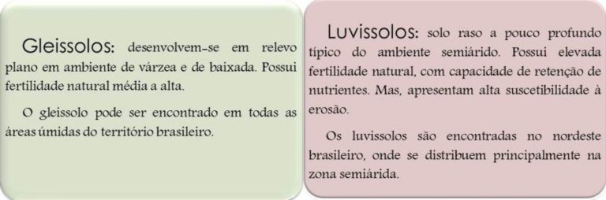
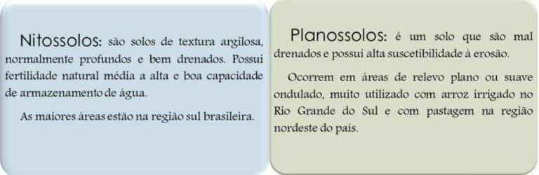
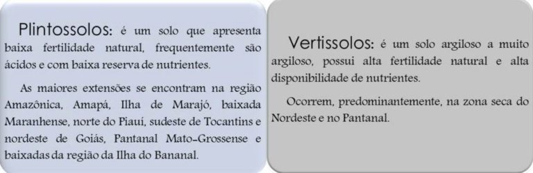
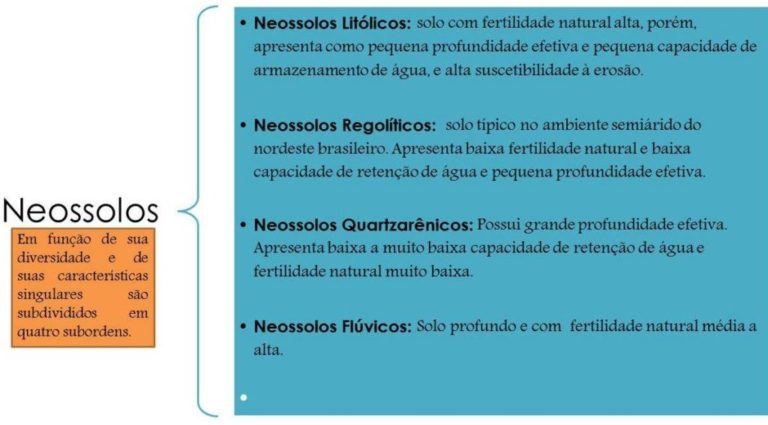
Ao entender as 13 classes de solos existentes no Brasil, agora é possível visualizar com clareza a distribuição dos mesmos no país e nas regiões brasileiras (Norte, Nordeste, Centro Oeste, Sudeste e Sul). A tabela abaixo apresenta os valores absoluto e relativo total em porcentagem da distribuição dos tipos de solos no Brasil. A partir de tais dados, percebe-se que solos Latossolos se encontram em maior área no país, ocupando 38,73%; em seguida os solos Argissolos ocupando 19,98% e Neossolos ocupando 14,57%.
Extensão e distribuição dos solos no Brasil – Fonte: adaptação GEO Brasil 2002
Ao analisar tais valores porcentuais em todo o Brasil, é possível questionar: qual é o panorama de distribuição desses solos em cada região brasileira? Tal pergunta é importante levantar, pois para a produção animal (engorda dos animais em função da pastagem) e para os cultivos de milho e soja, por exemplo, as características do solo são importantes, principalmente no que diz respeito à disponibilidade de nutrientes para as plantas.
Desse modo, os solos estão distribuídos:
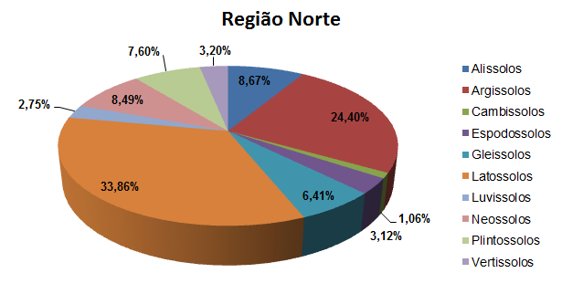
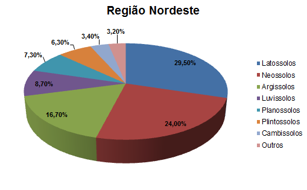
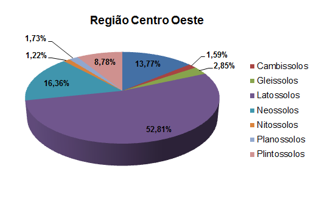
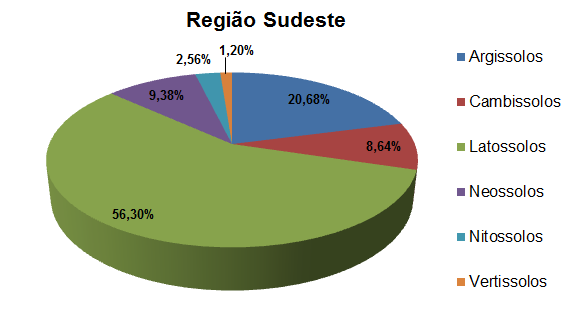
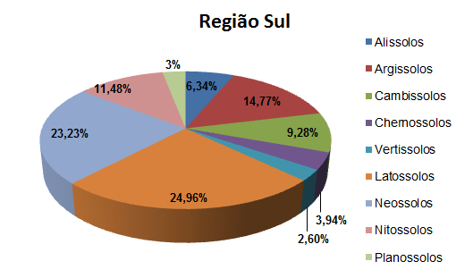
Além disso, é importante mencionar que cada região brasileira tem áreas de destaque no agronegócio, seja na produção vegetal e/ou animal. E cada produção está ligada diretamente com as condições específicas dos solos.
Desse modo, no Norte do Brasil, a pecuária é a principal atividade, destacando na produção leiteira; também há o cultivo de mandioca. No Nordeste, a atividade se dá em função das diferentes paisagens da região, ou seja: a produção de cana de açúcar na Zona da Mata (trechos úmidos no litoral); no Sertão ( área mais seca da região) se destaca à pecuária; a monocultura de fumo e soja, além da criação de ovinos e caprinos no Agreste (transição entre Sertão e Zona da Mata) e na paisagem Meio Norte (prolongamento da Amazônia) se destaca na pecuária extensiva. No Centro Oeste, os principais produtos da agropecuária são: soja, carne bovina, cana de açúcar, algodão herbáceo e milho, sendo o primeiro lugar a produção de soja. Já no Sudeste, os principais produtos são: cana de açúcar, café, leite de vaca e laranja. Por fim, na região Sul destaca as cadeias produtivas da soja, do milho, de suíno, de trigo, de arroz e de fumo.
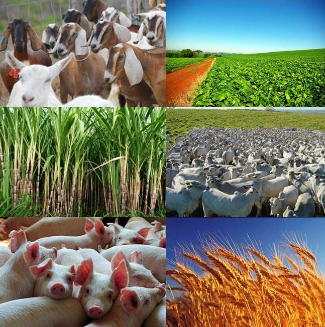
Diante desse cenário, existem problemas relacionados com a agricultura e a pecuária, que são fatores preponderantes na degradação do solo, que evidentemente é um grande problema na cadeia produtiva. Como exemplo, podemos citar sobre o uso excessivo da pastagem sem manutenção, que devido ao uso do solo pode ocorrer à queda da fertilidade e queda na produção. Isso ocorre principalmente devido à falta de manejo adequado, como correção, fertilização e práticas conservacionistas do solo (evitar áreas descobertas que influenciam à erosão e construção de terraços em terrenos de alta declividade).
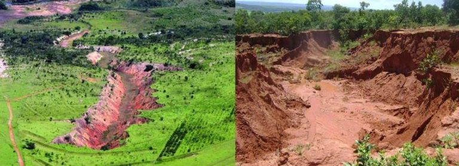
Considerando todos os tópicos abordados até aqui, observa-se a importância que o solo possui no sistema produtivo e o quão importante é conhecer as propriedades dos mesmos, principalmente no que diz respeito à fertilidade quando afetada pela degradação.E para evitar o problema de degradação, podem-se utilizar estratégias que vão das práticas conservacionistas (construção de terraços), plantio direto na palhada, adubos verdes, manejo da pastagem à manutenção do solo somente quando necessário (em relação à gradagem e aração). Veja o vídeo no semi árido: Técnicas de conservação do solo e da água – Dia de Campo na TV
REFERÊNCIAS
GEO Brasil 2002. Perspectivas do Meio Ambiente no Brasil / Organizado por Thereza Christina Carvalho Santos e João Batista Drummond Câmara. – Brasília: Edições IBAMA, 2002.
MANZATTO, C. Vainer; FREITAS JUNIOR, Elias de; PERES, José Roberto R. (ed.). Uso agrícola dos solos brasileiros. Rio de Janeiro: Embrapa Solos, 2002 (174 p.). Disponível em Clique Aqui (acessado em Abril de 2017).
CASTRO, C. N. D. A Agropecuária Na Região Sudeste: Limitações E Desafios Futuros. Texto para discussão, Brasília, Instituto de Pesquisa Econômica Aplicada (IPEA), nº 1952, ISSN 14154765, abril, 2014.
CASTRO, C. N. D. A A Agropecuária Na Região Sul: Limitações E Desafios Futuros. Texto para discussão, Brasília, Instituto de Pesquisa Econômica Aplicada (IPEA), nº 1993, ISSN 14154765,
agosto, 2014.
CASTRO, C. N. D. A Agropecuária Na Região Centro Oeste: Limitações E ao desenvolvimento e desafios Futuros.Texto para discussão, Brasília, Instituto de Pesquisa Econômica Aplicada (IPEA), nº 1923, ISSN 14154765, janeiro, 2014.
CASTRO, C. N. D. A agropecuária Na Região Norte: Oportunidades e limitações ao desenvolvimento. Texto para discussão, Brasília, Instituto de Pesquisa Econômica Aplicada (IPEA), nº 1836, ISSN 14154765, maio, 2013.
MARQUES, F. A et al. Solos do Nordeste. EMBRAPA, Brasília, novembro, 2014.
SENADO FEDERAL. Agropecuária na região nordeste. Disponível em ( Clique Aqui). Acesso em 12 de abril de 2017.